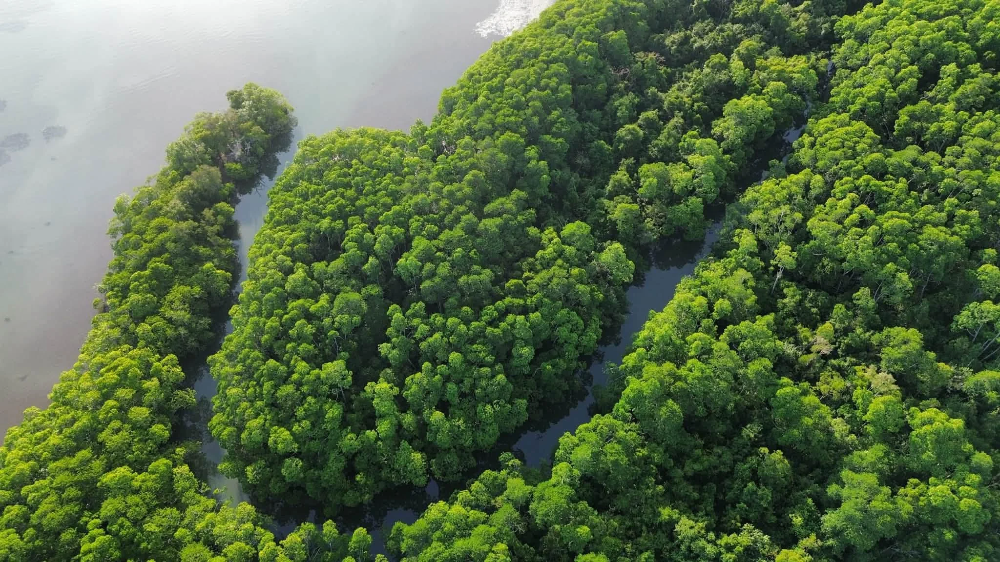
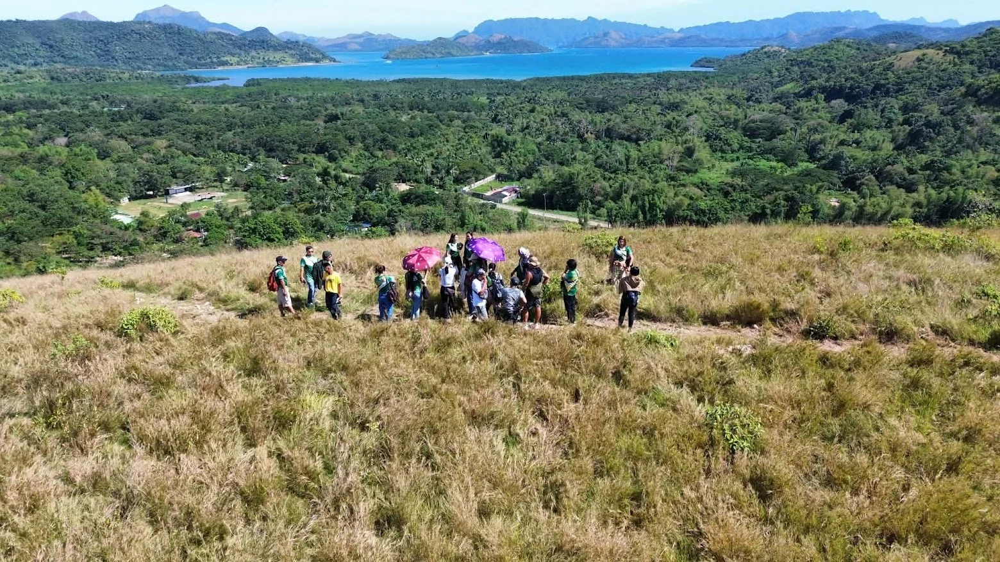

1:00 PM — 9:00 PM
Kingfisher Park · Coron, Palawan · Calamianes, Philippines

Park hours, visitor preparation, and guidance for enjoying the natural environment responsibly.
Kingfisher Park · Coron, Palawan · Calamianes, Philippines
Availability depends on low/high tide conditions and resulting water depth.
An evening boardwalk experience in the mangrove landscape.
Boardwalk viewing plus kayaking for bioluminescent plankton and additional firefly viewing.
Combines the park’s three current visitor activities.
For firefly tours, apply insect repellent before entering the park, away from the firefly-viewing area.
Wear comfortable clothing and suitable footwear for outdoor paths and conditions.
Do not touch or catch fireflies. Repellent on hands or skin may harm them—watch from a respectful distance.
Do not touch mangrove leaves, and avoid flash photography around fireflies.
Keep voices and unnecessary noise low. Follow park and guide instructions, especially along water, paths, and viewing areas.

What makes the Pagatpat special? Discover its story with your guide during the tour.
A habitat photograph is shown while a park-verified Pagatpat image is being sourced. View an identified Pagatpat reference photograph (Iloilo River) ↗ by A.C.T. Alejandre, licensed under CC BY-SA 4.0.